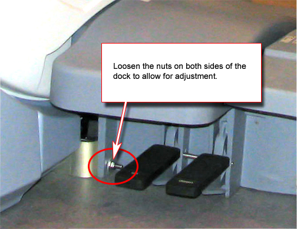

Loosen the screws mounting the dock bracket to the magnet and the cover support brackets to dock bracket, and loosen the nuts mounting the dock to the dock bracket. See Illustration 12.
| ||||
| POSSIBLE PERSONAL INJURY! | ||||
| THE DOCK CONTAINS FERROUS MATERIALS. | ||||
| DO NOT remove any mounting screws or nuts– only loosen them. |
Move dock to proper position so guide rails line up. Lift the dock bracket slightly off the ground (approximately 1 mm) and tighten all fasteners.
Illustration 12: Dock Positioning Adjustment
